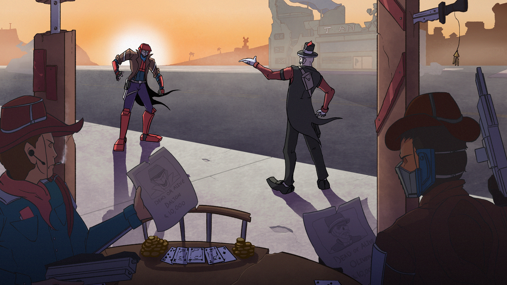
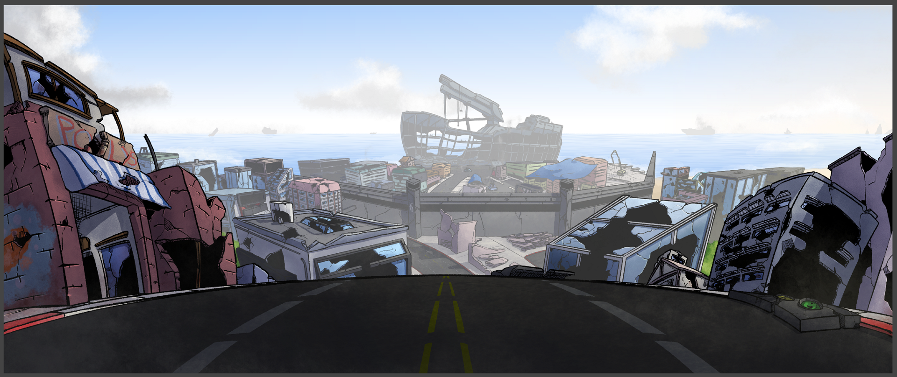
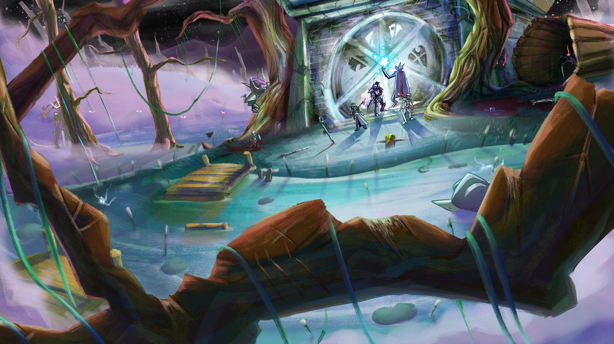
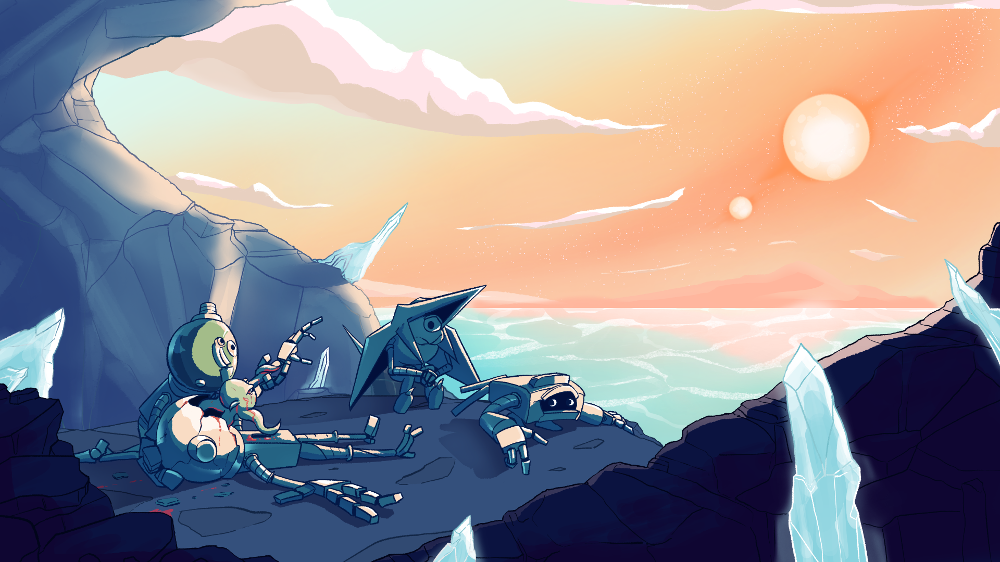
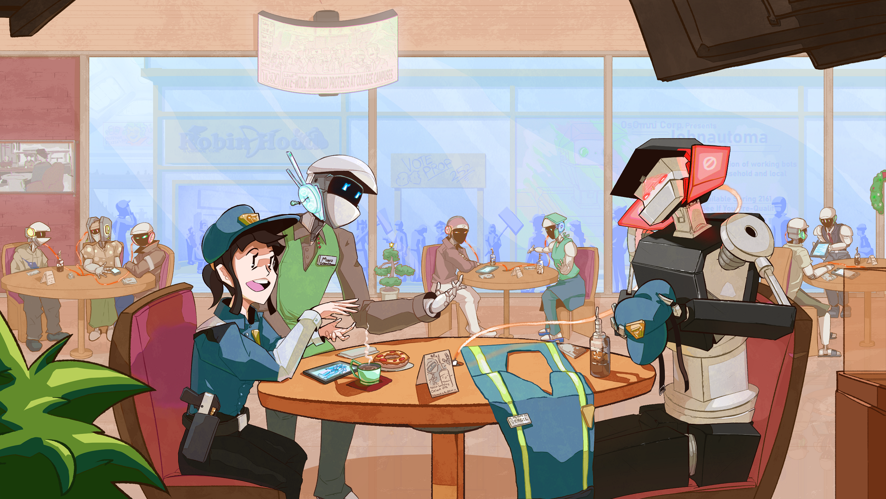
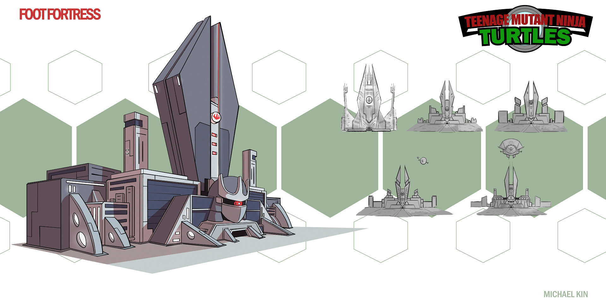
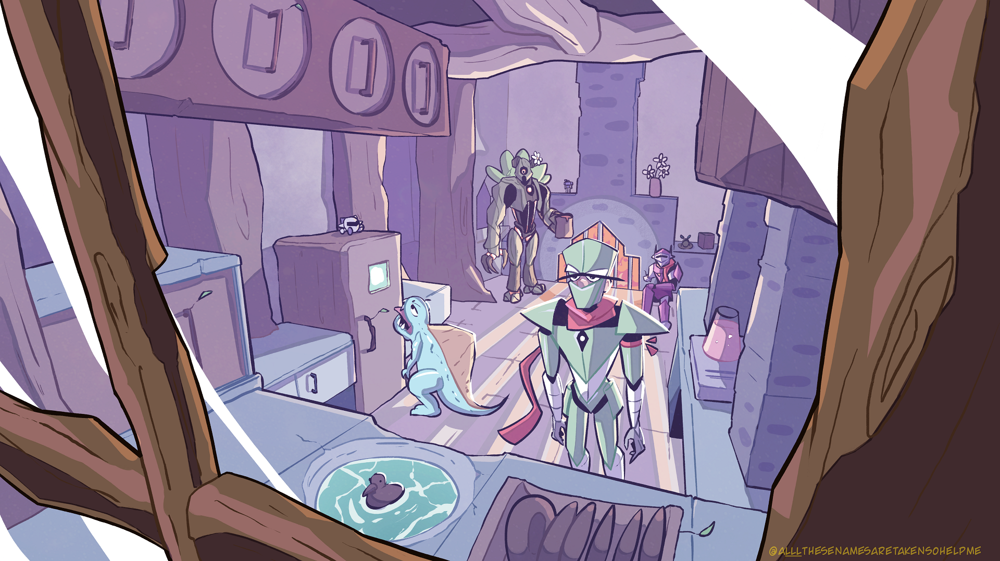
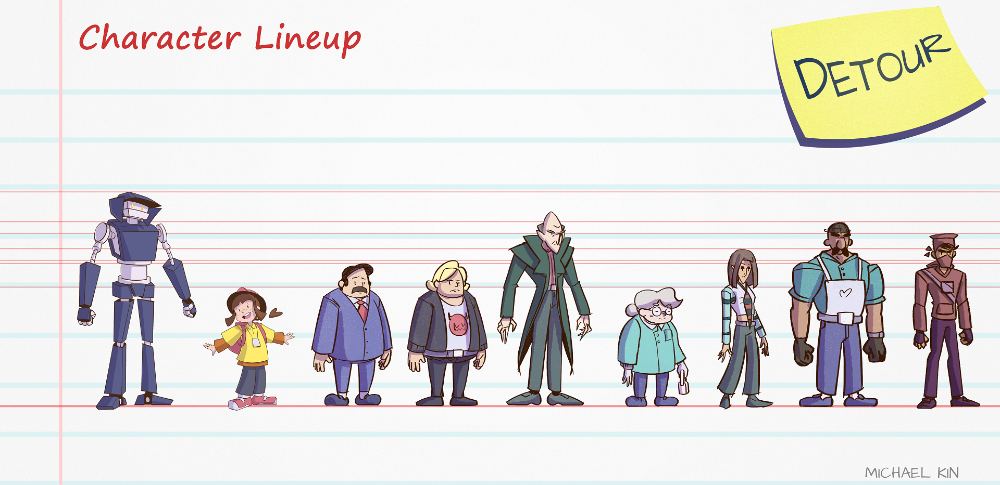

Michael Kin - El Valiente
Hi, I am Michael. I’m an animation major. Before I became one though, I started out drawing little comics with an old friend in middle school. Then watching television shows and playing games like Regular Show, TMNT, Transformers, and Halo really influenced me into becoming an artist. Transformers, and Halo in particular are responsible for influencing my designs. Whether it’s 2D, 3D, or stop-motion, I enjoy bringing characters to life. To give the illusion that they are alive and inhabit their own worlds. That’s really the fun of being an animation major, creating worlds, people, and stories. It’s honestly one of the reasons why I chose to go into animation. To create stories that hold an emotional connection with us even if they aren’t real or realistic: they feel real. They stick with us for the rest of our lives whether it’s consciously or unconsciously. I hope one day that I get to help animate a story that does that.







